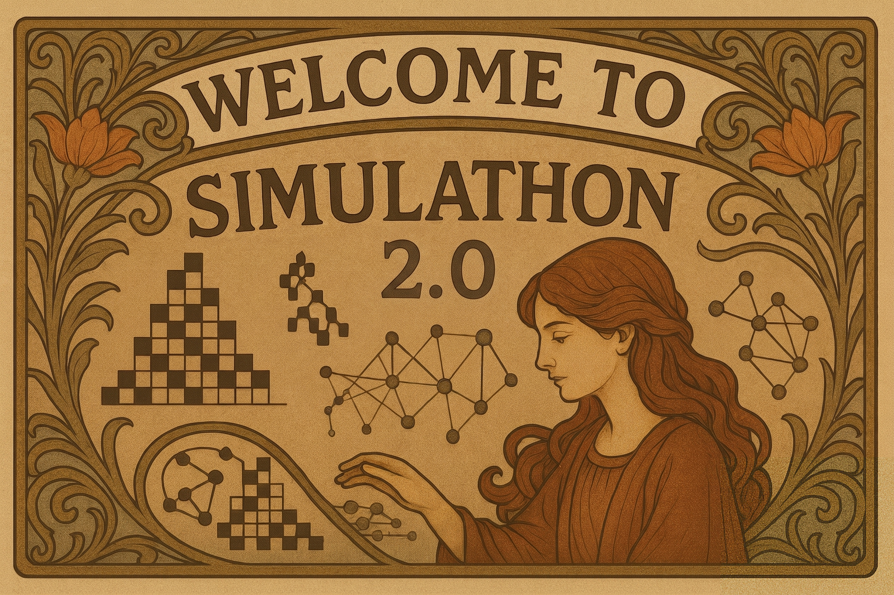

Welcome!
Welcome to the Simulathon 2.0! We’re thrilled to have you here. On this page, you’ll find the key information, resources, and guidelines for the event. Please read through it carefully to ensure a smooth and productive hacking experience.

Let’s build something amazing together! If you have any questions, don’t hesitate to reach out to the organisers.
Vibe Coding:
Vibe coding is a programming approach that relies heavily on AI assistance, where developers describe the desired functionality in natural language and then let an AI generate code based on their instructions. Instead of writing code directly, the programmer focuses on prompting the AI, testing the output, and refining the code as needed.

Project Examples
Participants will build simple simulation applets that explore systems from different fields of physics, math, ecology, game theory, etc. For example, you might simulate gases in a box, create cool patterns using math, model predator-prey interactions, or simulate basic strategy games. The goal is to make complex ideas easy and fun to see in action.
Models to Use
You are welcome to use any LLM for your coding tasks. We recommend using the latest free-tier models from Claude, Gemini, or ChatGPT.
Requirements:
- An active GitHub account.
- A free account with a coding-capable LLM like Claude, Gemini, or ChatGPT.
- A dedicated text editor suited for writing code, such as Sublime Text, Visual Studio Code, or Atom.
Workflow:
Projects should be developed in JavaScript to run directly in a web browser. Even if you have absolutely no prior experience with JavaScript, the recommended LLMs are fully capable of writing the code and guiding you through the process.
For app development, we encourage a 3 phase workflow.
Planning:
- Choose a model to develop.
-
Think about the features of the app. These should include:
- The system to be simulated,
- Input parameters and Widgets to control the behaviour of the system,
- Relevant metrics to visualize for exploring the behaviour of the system.
Development:
- Build the app iteratively, adding functionality and components piece by piece.
- Create a prompt describing with detail and precision everything that needs to be implemented in a given iteration.
- Specify to the model that the output must be coded in JavaScript.
- Copy the output of the model and save it in a file called index.html.
- Double-click on that file to run it in your web browser.
-
If the project grows larger, it is convenient to split the file into 3 files:
index.htmlfor the web components,styles.cssfor the aesthetics,script.jsfor the logic.
- Repeat these steps until the applet is considered complete.
Hosting the applet:
- Once done, upload to a GitHub repository.
-
Configure GitHub Pages for that repository:
- Go to Settings/Pages.
- In Build and Deployment, select Branch "main".
Try to be creative! Feel free to explore systems beyond traditional physics. You can draw inspiration from ecology, game theory, economics, maths, etc. It is easier to create simple systems with well-defined and easily described rules than to build systems that involve complicated physical algorithms.
Rules:
- Participants can submit as many applets as they want.
- Applets can be created entirely through Vibe Coding, as well as through manual coding or hacking of output code.
- Applets should be presented as a web page.
- Applets that do not run will be disqualified.
- Participants will present one applet in a 5–10 minute presentation.
Deliverables:
The finalized applets must be sent to simulathon@gmail.com. Each submission must include:
- Applet name,
- Names of participants,
- Applet icon,
- Link to the page where the applet is hosted,
- Link to the GitHub repository.